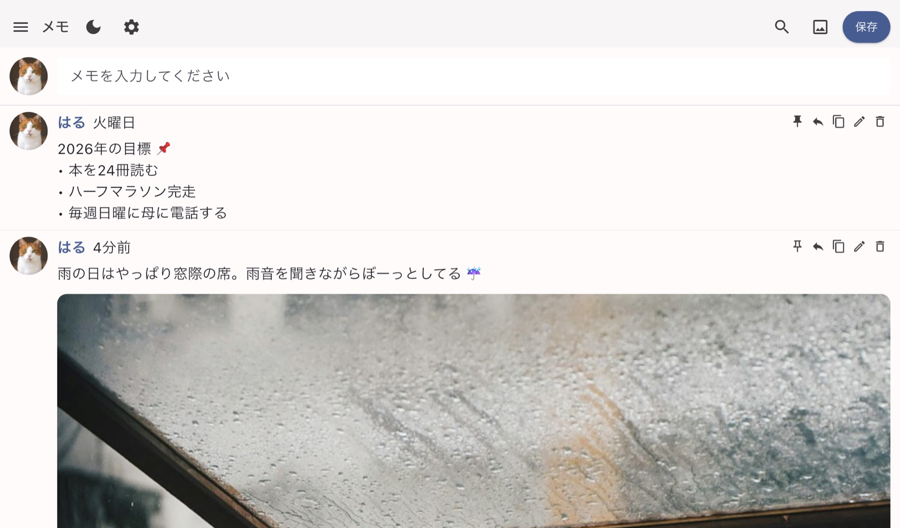
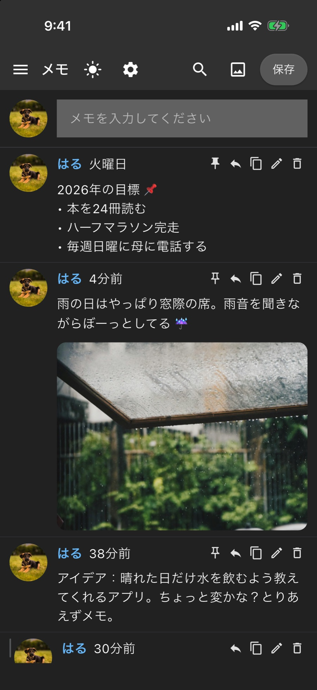
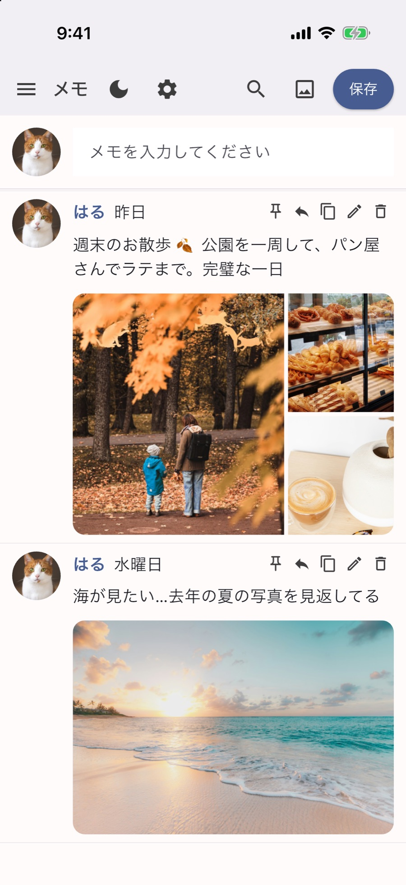
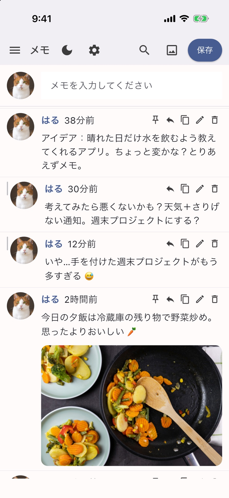

モニターの横に細く置いておく
ウィンドウの幅を細くして、作業画面の横にそっと並べてみてください。今年の目標や好きな言葉を一番上に固定しておけば、仕事の合間にちらっと見るだけで気持ちが引き締まります。
ヒント：プロフィール写真を隠すと、細いウィンドウでも文字のスペースが広々します！



SNSに投稿するみたいに、気軽に書いてみてください。ふと浮かんだ考えも、日常の写真も、自分の投稿につけた返信も、すべて自分の端末の中だけに残ります。アカウントも、サーバーも、気をつかう相手もいません。
新しい文書を開くと、真っ白な余白がまずプレッシャーですよね。一、二行のひとりごとをファイルにするのも大げさで、結局ウィンドウを閉じてしまいます。
鍵をかけても、結局は誰かのサーバーに残る投稿ですから。本当の気持ちは、最後まで飲み込んでしまうんですよね。
入力欄に書いて保存を押すだけ！新しい投稿が上に積み重なり、端末の外には一文字も出ていきません。


ウィンドウの幅を細くして、作業画面の横にそっと並べてみてください。今年の目標や好きな言葉を一番上に固定しておけば、仕事の合間にちらっと見るだけで気持ちが引き締まります。
ヒント：プロフィール写真を隠すと、細いウィンドウでも文字のスペースが広々します！
散歩道の景色、近所のパン屋さん、一杯のラテまで。投稿ごとに写真を10枚まで付けて、自分だけの日常フィードを作ってみてください。「いいね」をもらう必要がないから、適当に撮った写真も愛おしく見えます。
ふと浮かんだアイデアに返信を付けて、考えをつなげてみてください。元の投稿を書き直さなくても、考えがどう育っていったのか、その流れがそのまま残ります。
自分しか見ない場所だから、言葉を選んだり飾ったりする必要はありません。明かりを消した部屋では落ち着いたダークモードに切り替えて、心にしまっていた言葉をそのまま書き出してみてください。
これから入れてみたら面白そうだな、と思っていることの小さなメモです。まだアプリに入っている機能ではなく、必ず作るという約束でもありませんが、少しだけ共有します！
鍵アカウントでも、投稿が誰かのサーバーに保存されるなら、完全な秘密とは言えません。Solcheは最初からサーバーなしで動くように設計しました。
いまご覧のこのホームページも、訪問者を一切追跡しません。Cookieも、解析ツールも、外部フォントさえ使っていません。
無料 · 広告なし · 会員登録なし
Solcheは、Stardreamという名前で企画・開発しているアプリです。いまのところ広告もアプリ内課金もありません。